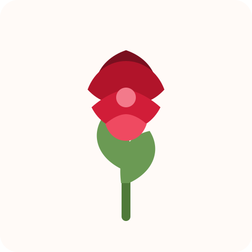
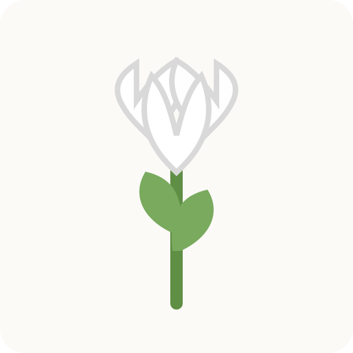
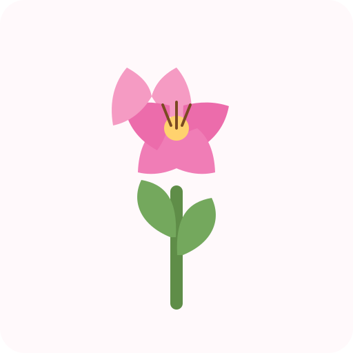
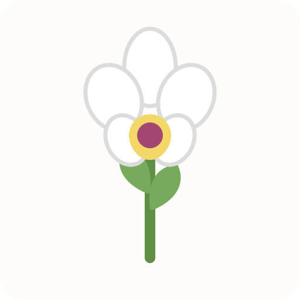
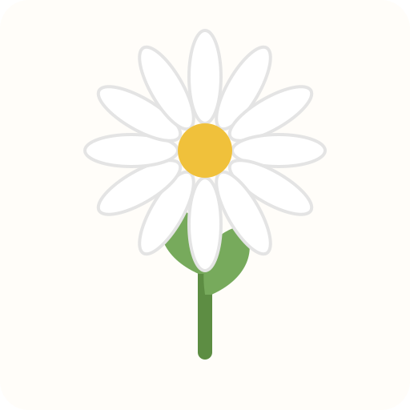
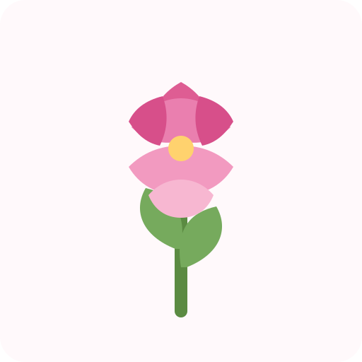

Rosa roja
Romántica y elegante para fechas especiales.
25 años liderando en el sector ,con un amplio catálogo de flores y ramos, centrandonos en la calidad y la sostenibilidad.

Romántica y elegante para fechas especiales.

Limpio, delicado y perfecto para composiciones suaves.

Color y presencia para ramos con más volumen.
Una flor luminosa para regalos alegres.

La opción más refinada y decorativa.

Fresca, natural y muy versátil.

Volumen, textura y un acabado premium.
Una flor clásica, resistente y vistosa.
Nos centramos en trabajar con flores obtenidas mediante una producción ecológica y que respeta el medio ambiente.
Trabajamos con flores seleccionadas para conservar mejor color y presencia gracias a nuestros proveedores KM0.
Asesoramiento personalizado para ayudarte a elegir el detalle más adecuado.